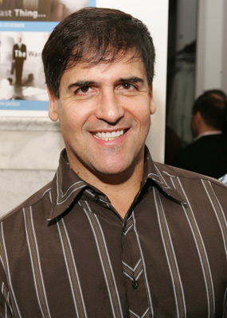

#8988 The Clapper


 IMDB-Wertung: 5.1 / 10
IMDB-Wertung: 5.1 / 10  Metascore: 21
Metascore: 21 
Eddie (Ed Helms) und sein Freund Chris (Tracy Morgan) verdienen ihr Geld damit, in TV-Studios rumzusitzen und Beifall zu klatschen - ein ruhiges Leben. Für Eddie bringt einzig eine Romanze mit der Tankwärtin Judy (Amanda Seyfried) etwas Abwechslung in sein monotones Leben. Doch Talkshow-Gastgeber Jayme Stillerman (Russell Peters) interessiert sich plötzlich für Eddie und seinen kuriosen Job. Durch den folgenden Medienrummel sind sowohl Eddies Beschäftigung wie auch seine Liebe gefährdet...
Jahr: 2017
Dauer: 90 Minuten
FSK:
Land: USA Studio: Momentum PicturesTonspuren: DD5.1 - ,
Untertitel: Deutsch, Englisch,
Auflösung: 1080p (1920x808) Größe: 6963 MB
Genre: Komödie
Regisseur: Dito Montiel
Drehbuch: Dito Montiel
Soundtrack: Jimmy Haun, David Wittman
Darsteller:
 Amanda Seyfried als Judy
Amanda Seyfried als Judy Ed Helms als Eddie Krumble
Ed Helms als Eddie Krumble- Leah Remini als Producer Louise
 Tracy Morgan als Chris
Tracy Morgan als Chris Adam Levine als Ranter
Adam Levine als Ranter James Ransone als
James Ransone als  Brenda Vaccaro als Ida Krumble
Brenda Vaccaro als Ida Krumble P.J. Byrne als Mr. Caldwell
P.J. Byrne als Mr. Caldwell- Alan Thicke als Alan Thicke
 Charles Halford als Ronnie
Charles Halford als Ronnie-  Mark Cuban als Mark Cuban
 Wendy Braun als Wendy
Wendy Braun als Wendy Roger Guenveur Smith als Dr. Rogers B. Hay
Roger Guenveur Smith als Dr. Rogers B. Hay- Nico Santos als Buffet Person
 Russell Peters als Stillerman
Russell Peters als Stillerman- Todd Giebenhain als Tambakis
 Sandra Rosko als Fan at Gas Station
Sandra Rosko als Fan at Gas Station- Rob Gronkowski als Rob Gronkowski
- Billy Blanks als Billy Blanks
 Peter Anthony Tambakis als Bug-Eyed Intern
Peter Anthony Tambakis als Bug-Eyed Intern- Sara Sampaio als Sara Sampaio
- Cody Renee Cameron als Mohawk Girl
- Diona Reasonover als Big Bang Theory Producer
- Mickey Gooch Jr. als Yugoslavia
 Robert Axelrod als
Robert Axelrod als - Rogelio T. Ramos als Defense Attorney
 Greg Vrotsos als Hercules Karesh
Greg Vrotsos als Hercules Karesh- Vince Offer als Vince Offer
- Isabella Sanchez als Sexy Bailiff
- Louis Fasanaro als Clapper
- Ray Bouderau als Man in Line
- Katie Callaway als Audience Member
- David Barroso als Spiderman
- Teya Patt als Frantic Woman
- Carolina Levi als Finding Judy
- Jason David als Little Boy
- Aemilia Scott als Pet Store Owner
- Darrion Scoggins als Burger Patron #7
- Mike Hermosa als Audience Member
- Chris aka Trash Bright als Burnt Out Rocker
- Liana Legaspi als Hallway Reporter
 Margaret Newborn als Bus Passenger / Pedestrian
Margaret Newborn als Bus Passenger / Pedestrian- David Jason Perez als Hollywood Weirdo
- Russell Becker als Blue Superhero
- Bryan DeLorenzo als Infomercial Cameraman
- Wade Barrett als Mother
- Marcela Macias als TV Spanish Producer
- Victor A. Chapa als Alfie
- Franklin J. Sterns als Big Cup Clapper
- Mike Egbert als News Cameraman
Datei: X:\2017(A-F)\Clapper, The (2017, FSK, 1920x808).mkv seit 16.05.2018
Festplatte: HD 2017(A-Z)-2018(A-F)
 Es gibt insgesamt 152 Filme in der Gruppe '2017(A-F)'
Es gibt insgesamt 152 Filme in der Gruppe '2017(A-F)'